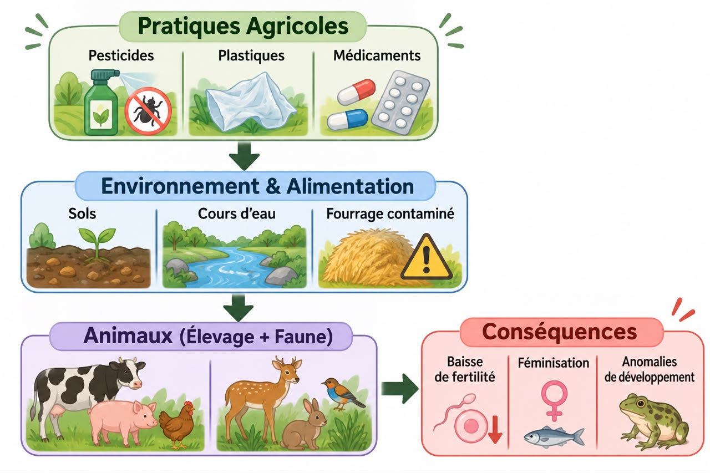

Se protéger
Gants, combinaison, masque adapté et lunettes pendant la préparation et l'épandage.
AgriSafe
[Texte de présentation] Rencontre avec un agriculteur réunionnais : il nous raconte son quotidien, la manière dont il utilise les produits phytosanitaires et ce qu'il ressent face aux risques pour sa santé.
Un perturbateur endocrinien est une substance étrangère à l'organisme qui altère le fonctionnement du système hormonal et peut entraîner des effets néfastes sur la santé. Pour poser les bases, regardez cette courte vidéo.
Vidéo posant les bases


Le système endocrinien produit des hormones, des messagers chimiques qui régulent la croissance, le métabolisme, la reproduction ou l'humeur. Chaque hormone se fixe sur un récepteur précis, comme une clé dans une serrure.
Les perturbateurs endocriniens interfèrent de trois façons :
Ces effets peuvent apparaître à très faibles doses et parfois longtemps après l'exposition, ce qui les rend difficiles à détecter.

Survolez ou touchez chaque effet pour en savoir plus.


Gants, combinaison, masque adapté et lunettes pendant la préparation et l'épandage.
Ne pas traiter par vent fort ; respecter les doses et les délais de rentrée dans les parcelles.
Se laver les mains et se doucher après le travail ; laver les vêtements de protection à part.
Rotation des cultures, lutte biologique, désherbage mécanique, biocontrôle.
Local fermé et aéré ; rapporter emballages et produits non utilisés aux filières agréées.